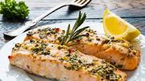

Filé de salmão ao forno

Ingredientes:
- 500 g de filé de salmão
- Azeitonas fatiadas sem caroço
- Orégano
- 3 colheres de sopa de Molho de soja (shoyu)
- Sal a gosto
- Azeite a gosto
- Limão
- Papel alumínio
- 1/2 cebola fatiada
- Lave o salmão com suco de limão.
- Aqueça o azeite e adicione a cebola fatiada, deixando no fogo até que fique transparente. Reserve.
- Cubra uma assadeira com papel alumínio de maneira que a sobra dê para forrar todo o peixe.
- Sobre o papel alumínio na assadeira, coloque o peixe já temperado com sal, regue com azeite e shoyu.
- Decore com fatias de azeitonas e um pouco de orégano. Despeje a cebola por cima. Embrulhe com o papel alumínio, de maneira que o líquido não derrame quando começar a esquentar. Leve ao forno médio para assar por cerca de 30 minutos.
- Sirva com legumes e salada verde.